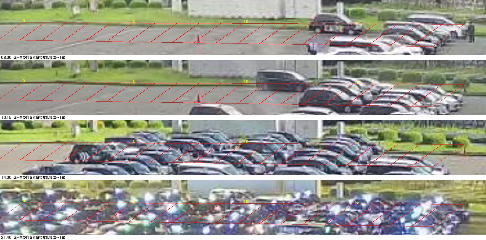
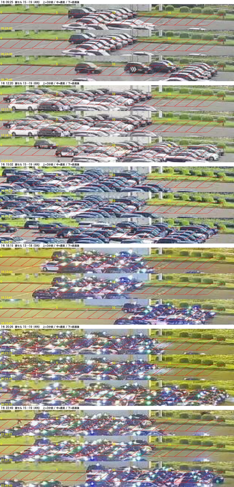
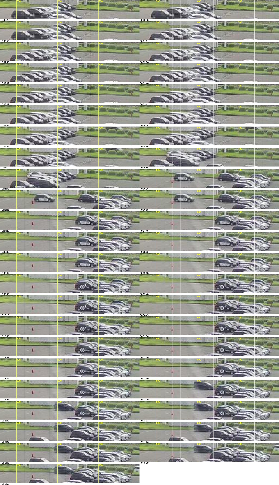

1号：車の向きに合わせた箱（2026-09-19・描き直し）
4号と同じ考え方。1号の帯（白線と平行）に沿って、車1台ぶん（幅20px）の箱を20個、箱の縦の辺は車の向き（1号のスロット列の向き＝右上→左下）に合わせた平行四辺形で並べ、箱ごとに「車がいるか」を取り、頭（出口側＝右端）の箱が前へ跳んだ瞬間を列移動と数える。
① 箱

赤＝箱0〜19（x 380〜780、帯 t=121〜138）。縦の辺が車の傾きに沿う。最初の四角い箱は車を斜めに切っていたので描き直した。8時は頭側だけ、14時は満杯、18時は中ほど、21時は夜。
車の有無＝箱の中の「模様の濃さ」（明るさのばらつき÷平均）。路面は一様、車は明暗が混ざる。夜は行灯で同じく濃くなる。一度「あり」になったら少し薄くなっても保つ（ちらつき止め）。
② 検出した前進（9/17・26回）

6件の例。上＝3分前／中＝直前／下＝前進後。数字は頭の箱の番号。
見えること：頭の車が1台ずつ出て頭が下がり（14〜12まで）、そのあと塊が一気に右へ5〜6箱ぶん進む。10時台の実例（下）も同じ。

10:00〜10:16 の30秒おき（x 460〜800）。10:05〜10:06 に塊ごと右へ進む。
③ 数字
| 方式 | 9/17 回数 | 9〜12時 | 備考 |
|---|---|---|---|
| 今の方式（帯の変化の広さ） | 17 | 0 | 昼の小さな動きを落とす |
| 箱方式（車の向きの箱・頭の跳び） | 26 | 4 | 跳んだ箱数の合計 99（1回あたり 1〜7箱、最多4箱） |
あなたに確認したいこと（列数の数え方）
1号は、4号と違って「頭の列が1つ出たら塊が1列進む」ではなく、頭の4〜6列ぶんが1台ずつ出てから、塊がまとめて4〜6列ぶん進むように見えます（②の画像）。
(a) その理解で正しく、1回の前進＝出た列の数（4〜6列）と数えるのか、
(b) 1号は「塊が動いた回数」（1日24回）で数えるのか。
また、箱の幅20px＝車1台ぶん（≒1列）で合っているかも、②の画像で見てください。
1号は、4号と違って「頭の列が1つ出たら塊が1列進む」ではなく、頭の4〜6列ぶんが1台ずつ出てから、塊がまとめて4〜6列ぶん進むように見えます（②の画像）。
(a) その理解で正しく、1回の前進＝出た列の数（4〜6列）と数えるのか、
(b) 1号は「塊が動いた回数」（1日24回）で数えるのか。
また、箱の幅20px＝車1台ぶん（≒1列）で合っているかも、②の画像で見てください。